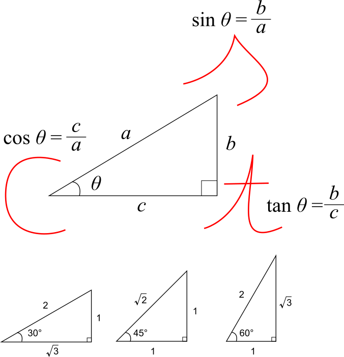
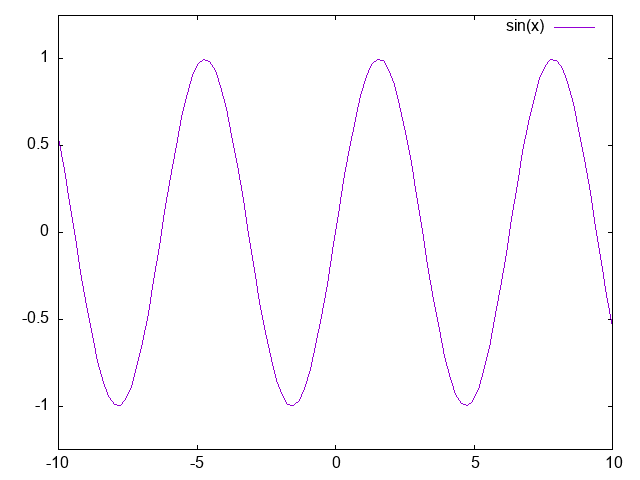
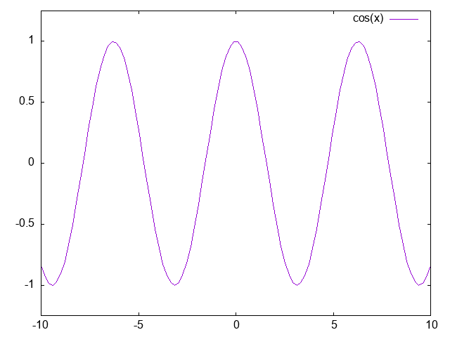
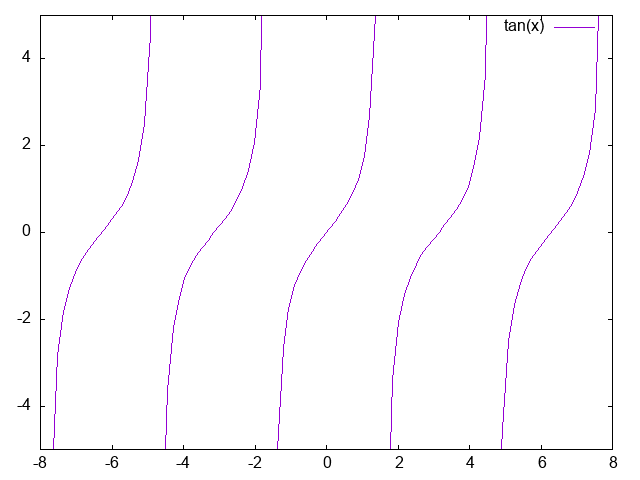

三角比の世界観です。
三角比の覚え方と比率について、以下のように覚える。

覚え方として、30°と60°の比率は1, 2, 3と数える。45°の比率は1＝1, 2と数える。斜辺は2であり、1と3は短いほうが1であるとする。3あるいは3がなければ2が平方根であると覚える。
以上は以下のページを参考にInkscapeで自分で図を描きました。
後日注記：直角三角形の三辺の比率については、三角形は三辺すべての比率が等しいか、二辺の比率とその間の角が等しいか、あるいは二組の角が等しければ相似となるため、直角以外のひとつの角度さえ決まってしまえば、あとは合同と相似の条件によって自動的にすべての辺の比率が定まる。三角形の大きさが異なっても、角の大きさと辺の比率は変わらない。そのため、三角比を使うことができる。
2025.06.24編集
図形はすべて三角形の集合体として表せるので、三角比を使うことであらゆる図形の面積などを計算・証明することができる。
広く知られているのは、
| 三角比 | 数式 |
|---|---|
| 正弦 | \[\sin \theta = \frac{b}{a}\] |
| 余弦 | \[\cos \theta = \frac{c}{a}\] |
| 正接 | \[\tan \theta = \frac{b}{c}\] |
の3種類。
だが、実際は逆数関数の、
| 三角比 | 数式 |
|---|---|
| 余割 | \[\csc \theta = \frac{a}{b}\] |
| 正割 | \[\sec \theta = \frac{a}{c}\] |
| 余接 | \[\cot \theta = \frac{c}{b}\] |
を加えて全部で6種類ある。
詳しくは以下の書籍・ページを参照のこと。
2023.02.22-23
2024.02.21-22編集
逆三角関数は、角度から三角比を得るのではなく、逆に三角比から角度を得る。
三角関数においては、\(x\)が周期的に存在するため、逆三角関数において\(y\)をひとつに定めたとしても\(x\)をひとつに対応させることができない。このために、まず、定義域に制限を加えて文字を大文字にする。
\[ \begin{eqnarray} y &=& \mathrm{Sin} \ x, \quad ただし -\pi/2 \leqq x \leqq \pi/2 \\ y &=& \mathrm{Cos} \ x, \quad ただし \ 0 \leqq x \leqq \pi \\ y &=& \mathrm{Tan} \ x, \quad ただし -\pi/2 \leqq x \leqq \pi/2 \end{eqnarray} \]
数学において、関数\(f(x)\)の逆関数を\(f^{-1}(y)\)と書く。この流儀に従い、逆三角関数は\(\mathrm{Sin}^{-1} \ y, \mathrm{Cos}^{-1} \ y, \mathrm{Tan}^{-1} \ y\)となる。
これ以外の逆三角関数の書き方として、\( \arcsin \frac{b}{a} = \theta \)、\( \arccos \frac{c}{a} = \theta \)、\( \arctan \frac{b}{c} = \theta \)などがあり、「アーク・サイン」などと読む。
（オイラーの贈物を参考に執筆・引用しました。）
2024.02.21-22編集
三角比は測量に使う。対象となるものと自分の間の距離と、そのものを見た時の角度から、ものの高さが分かる。
後日注記：三角比は、とても長く離れた場所への距離や、とても高いものの高さを測量する際に使うことができます。このため、山やピラミッドなどの巨大な建築物の高さや地球から星への距離などを三角比によって計算することができます。
（自分の書いたFacebookより。修正済み）
2023.02.22編集
三角比は直角三角形の角度θと周りの辺の比によって定義されるが、これを二次元グラフの中の円の中の角度θと、θによって回転する直線（動径）、そして円と動径が交わる点の位置として定義しなおしたのが三角関数。
角度θは「回転量」であると考えられる。
グラフが周期的な波になることが良く知られているが、ほかの計算でもよく出てくるので基礎として覚えておかなければならない。
（詳しくは図解入門よくわかる高校数学の基本と仕組みが参考になります。）
2023.02.23編集
自分の書いたブログ「わたしの名はフレイ」2020/09/20より。
円周率と三角比は、幾何学において重要な2つの比率である。
円周率πは、主に円とともに使われ、円周上の長さや円の面積を測る時によく使われる。
また、三角比は、直角三角形の3つの辺の比を、1つの角度から求める。
どんな三角形であっても、二つの直角三角形にひとつの直線を引けば分割できる。
三角比は、実際に測ることのできないような、巨大な距離や高さの測量に使われることが多い。
エベレストのような標高の高い山の高さや、月までの距離のような果てしない場所までの距離であっても、角度と他の辺の長さが分かってしまえば、実際には測れなくても計算で求めることができる。
円周率と三角比は数学にとってとても重要な比率であり、どんな大きさの円にも、どんな大きさや形の直角三角形にも適用できる、
言ってしまえば「幾何学における絶対的比率」であり、円や直角三角形とは全く異なる計算式であってもよく使われる。
たとえば、オイラーの等式は
\[e^{i \theta} = \cos\theta + i \sin\theta\]
あるいは
\[e^{i \pi} = -1\]
であり、これは\(y=x^a\)のような指数関数の形式をしており、ネイピア数eと円周率πが、互いに片方の数によってもう片方の数が決まる親戚のような定数の形をしており、虚数単位iによって-1が導かれる。
とても不思議な公式である。
円周率が円、三角比が直角三角形であるとすれば、僕はこれに正方形の一辺を求める平方根を加えて、「円（円周率）・直角三角形（三角比）・正方形（指数と平方根）」を幾何学の基本と言えると思う。
そして、それら基本的な幾何学ではなくても、放物線は二次関数で、サインカーブは三角関数で求められる、指数関数は爆発的に増えていく、そしてもっと複雑な関数になると微積分やベクトル・行列になる、ということを知っておけば、高校はたぶん半分ぐらい理解できている。
（オイラーの等式について詳しくはオイラーの贈物が参考になります。）
（以下は図解入門よくわかる高校数学の基本と仕組みを参考に執筆・引用しました。）
三角関数のサインカーブは波になる。
\(y=\sin \theta\)は綺麗な周期性と対称性を持った波のグラフになる。\(y=\cos \theta\)は、\(y=\sin \theta\)を平行移動したものになる。
ちなみに、\(y=\tan \theta\)はサインカーブにはならない。周期性と対称性はあるが、全く違うグラフになる。
以下はgnuplotで描いたsin(x)のグラフ。

以下はgnuplotで描いたcos(x)のグラフ。

sin 0°は0であるため、sin(x)は0から始まっている。cos 0°は1であるため、cos(x)は1から始まっている。
以下はgnuplotで描いたtan(x)のグラフ。

gnuplotも参照のこと。
三角関数のグラフがサインカーブになる理由ですが、直角三角形を考えた時に、角度θが変わっていくのと同様に直角三角形の各辺の比率が変わっていきます。この比率が綺麗な波のようになるのだと考えれば分かりやすいです。
「直角三角形」という図形を思い浮かべるのが難しい方は、代わりに長方形を想像して、その対角線と高さの比率だと考えるといいでしょう。
サインを長方形の対角線と高さだと思えば、なんとなく、三角関数がサインカーブの波になる理由が分かる気がします。コサインは対角線と底辺の比であるため、サインの逆となるのは当たり前ですね。タンジェントには対角線が含まれていないので、同じようにはなりません。
簡単に言えば、角度が増減するのに従って、対角線の長さと高さに対する比が0度から90度までじわりじわり変化するから綺麗な波になるのです。よく考えると、当たり前ですね。
2025.03.17
（以下は眠れなくなるほど面白い 図解 数と数式の話を参考に執筆しました。）
sin、cos、tanの三角比を使えば、直角三角形については、ひとつの辺と直角以外の1つの角がわかれば、他の2辺を求められる。
そして、以下に示す正弦定理と余弦定理を使うと、直角三角形だけではなく、一般の三角形の場合でも辺や角を求めることができるようになる。
正弦定理は、三角形ABC（対辺の長さをa, b, cとする）が外接円の中にあってその半径をRとすると、
\[ \frac{a}{\sin A}=\frac{b}{\sin B}=\frac{c}{\sin C}=2R \]
余弦定理は、三角形の各辺a, b, cと各角A, B, Cにおいて、
\[ a^2=b^2+c^2-2bc\cos A\\ b^2=c^2+a^2-2ca\cos B\\ c^2=a^2+b^2-2ab\cos C \]
（視覚でとらえるフォトサイエンス物理図録より引用。）
三角関数を用いた重要な公式として加法定理がある。数学上のさまざまな公式が加法定理をベースに作られている。
加法定理は、
\[ \sin (\alpha \pm \beta) = \sin \alpha \cos \beta \pm \cos \alpha \sin \beta\\ \cos (\alpha \pm \beta) = \cos \alpha \cos \beta \mp \sin \alpha \sin \beta\\ \tan (\alpha \pm \beta) = \frac{\tan \alpha \pm \tan \beta}{1 \mp \tan \alpha \tan \beta} \]
加法定理より、2倍角の公式と半角の公式が導き出せる。
後日注記：幾何学のプトレマイオスの定理（トレミーの定理）は、「円に内接する四角形ABCDにおいて、AB×CD+BC×AD=AC×BDが成り立つ」という定理ですが、これは本質的に加法定理と同じで、同じ結論を導き出します。以下が参考になります。
2023.09.01
2024.10.02編集
三角関数、虚数、そして指数関数が登場する、極めて興味深い定理であるド・モアブルの定理は、
\[ (\cos x \pm i \sin x)^n = \cos nx \pm i \sin nx \]
となる。数学的帰納法を用いた証明には加法定理を利用する。
（オイラーの贈物を参考に執筆・引用しました。）
2024.02.21
三角関数の微分においては、重要となる基本公式は、
\[ \lim_{x \to 0}\frac{\sin x}{x} = 1 \]
この式を使うことで、\((\sin x)' = \cos x\)ということが証明できる。
（放送大学「数学再入門 ('07)」を参考に執筆・引用しました。）
微積分も参照のこと。
2024.10.02
僕は、数学の中で宇宙で一番多いものは、三角比だと思っている。
僕は、Trigonometryを「三角比」と呼ぶのが良くないと思う。英語でいう三角法は、三角比という名前はついているが、三角形の比である、という数学というよりも、その上で応用的なさまざまなことを考える「学問」となっている。日本語で三角比や三角法というと、ただの三角形の「比」のことを学ぶだけだ、という先入観がついてしまう。
それはどうでも良いとして、プログラマの姉も、いつか適当に「三角比は使える」、といっていた。本当に、三角比とは不思議な学問で、三角比だけでさまざまなことが分かる。
円上の角度である、という三角比は、僕は「三次元を超えた新しい領域の幾何学」ではないかと思う。それは、円と三角形をベースとした回転の角度を考える、という意味で、ある意味では「三次元のままで、三次元を超える、次元の『広がり』を書き表す数学」ではないかと思う。単なる三角形の比ではない。三次元以上の高次元を書き表す幾何学、それが三角比なのであると、僕は何も知らないままで勝手に思っている。
三次元は「直角三角形の各辺の比」を考えるが、僕は「直角」という特徴が三角比の肝ではないかと思う。原点Oを通る直角の座標が、二次元や三次元の座標を表す。その上で、各辺の比を球体のように考えるが、僕は「角度」が重要ではないかと思う。自分は何も知らないが、本当に三角比は高次元の事象の動きが波であることを伝えている。五次元以上の世界では、物体は周期性を持った波になるのだと、僕は勝手に思っている。
原点Oを中心に、各座標に直角の新しい軸を作って四次元にするのだとしたら、僕は時空の四次元モデルよりも、太陽の周りを回る地球などの惑星の軸を四次元だと言えると思う。地球の中での三次元の座標軸と、地球それ自体が移動し回転する軸は違うが、それを直角のOにして、ある意味惑星が回るのを新しい軸だと言えるかもしれない。要は、「三次元グラフの中の座標はx,y,z軸があるが、グラフ自体が回転するs,t,u軸がある」と考えられる。冗談のように思われるかもしれないが、グラフ自体、宇宙自体、惑星自体、空間自体が位置と角度を変えるのである。それが、新しい「地球のような星の高次元」ではないかと、僕は勝手に考えている。
この高次元の考え方を、「空間の内包関係の高次元」という名前にしよう。空間の中と外では、別の座標軸が成り立つ。ある空間の中の“内部の”三次元と、その空間が含まれる“外部の”三次元は違う。内包関係を高次元とするならば、きっと次元は星の移動から銀河の移動、宇宙の移動と広がっていき、あるいは物体から原子の中身、素粒子の中身という風に深まっていく。だが、本当は、それは数学的ではない。なぜなら、直角で原点Oと交わらないからだ。数学的に言えば、直角で原点Oと交わるようにしないといけない。だが、僕は、Oにもう一つの「全体へと広がっていく平面」をつけることは出来ると思う。地球の真ん中をOにして、その真ん中に対して地球の自転と交点の軸を交わるようにすれば良いし、地球の今の位置を宇宙におけるゼロ地点にしてしまえば良いからだ。それはそれで、どの辺とも直角になるだろう。それが、僕の高次元だ。「アッシー次元」と名前を付けよう。
ちなみに、三角関数のサインカーブは、「円のように一方の角度が大きくなると、もう一方の角度が小さくなる」と捉えれば分かりやすい。
上向きだったものが少しずつ下向きになり、下向きだったものが少しずつ上向きになる。
また、細胞分裂は、真ん中から分裂して2つあるいは4つに分かれていくものを作れば、自分で同じものを物質的に作ることができる。同時に、進化のみだけをする生物を作れば、それはそのまま人間になる。
生物は海から生まれた。熱と波と風と重力によって、自然に生まれた。最初は青い血の海だった。海は青い血から体を作り上げた。
波とは、粒子が全体の反射によって波のような状態になることである。全体の反射があるために波になっている。粒子になるのは、粒子としての粒が大きくなって、比較的大きな「物体」となった場合である。
エネルギーは、宇宙においては単純に数として存在する。だから、人間の感覚である力は存在しない。力は力ではない。力はエネルギーの数量と現象が起きる際の捉え方に過ぎない。宇宙において存在するのは、慣性の法則と作用反作用とエネルギーの加わりだけである。ニュートンは正しい。
後日注記：これらの仮説の全ては自分で勝手に作って言っているものです。確かな根拠もありません。
現代数学が、三角関数、すなわちサイン・コサイン・タンジェントであふれているのは、数学者が現代の解析学が大好きだからです。
解析学とは、図形や幾何学を式で表し、単なる図形の特徴ではなく、関数と座標上のグラフとして数式で表現しようとする数学のことです。
現代の数学は、三角関数や微分・積分、あるいはベクトルや行列であふれていますが、これは現代の数学者が、デカルトやフェルマーに始まる近代の解析学の成果に基づいて思考しているからです。
決して勘違いしてはならないのは、「数学＝解析学」ではないということです。数学と解析学はイコールではありません。数学は決して解析学だけのものではないのです。
なので、サイン・コサイン・タンジェントが分からないからといって、数学を大嫌いになる必要はありません。解析学以外にも、数学の分野はあります。
2023.09.09